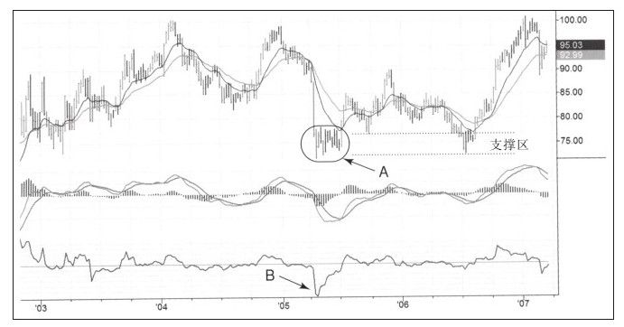
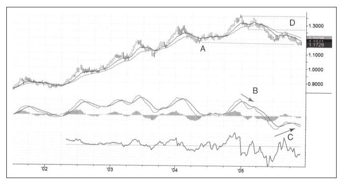
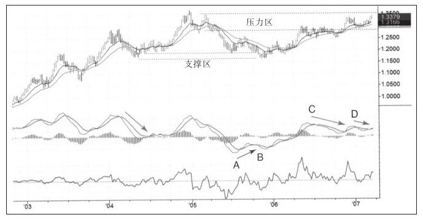
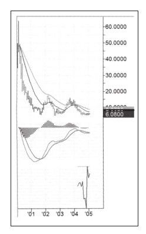
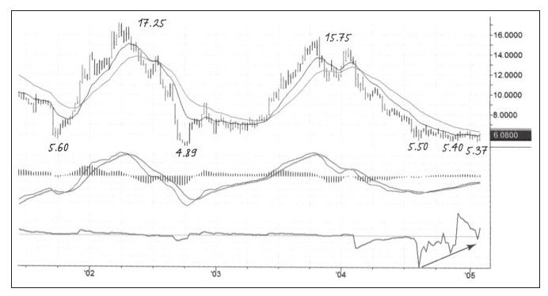
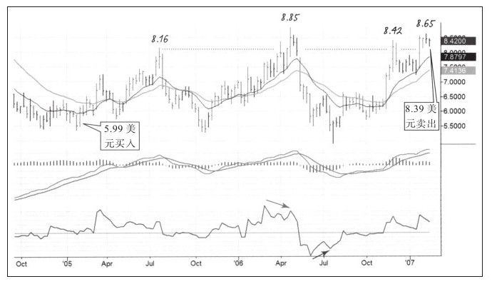
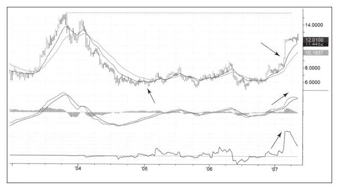

移动平均线卖出法适用于股票超卖后的反弹，通道卖出法适合短线交易者使用，这些方法可以用于短期波段交易。短期交易的波动幅度相对于长期交易者来说太小，我们曾把长线交易者称为投资者，但世界在变快，每个人又都是交易者。长线交易者的交易周期以月甚至年来衡量，这需要更大的盈利目标。猎鹿的人与猎兔子的人不同，猎鹿的人需要一杆大枪。
支撑和压力区的存在为长线交易者提供了盈利目标。我们把大量交易发生过的地方作为压力或支撑区，这样就很容易知道相对于压力或支撑，价格目前所处的位置。
要想对技术工具有信心，就必须知道这些工具如何工作、它们衡量的是什么。如果准备使用压力或支撑这项技术工具，就需要了解它们的本质。每个价格都表示买入者和卖出者在此达成的共识，同时也是交易大众中买卖双方达成的共识。如果有一批人不认同买卖双方达成的价格，那么就会以其他价格成交，以某个价格成交的成交量越大，表示越多的人认同这个价格。成交密集区表示很多市场参与者认同这个价格水平并在此买卖。
任何价格走势都不是直线运动，价格是在做区间运动，就像水在堤坝前打转一样。一旦堤坝决裂，价格就立即“蜂拥向前”，直到找到下一个“池塘”为止；之后，还会花很长时间在这个“池塘”打转，如果池塘堤坝再次决裂，价格就再次“蜂拥向前”。
如果单个价格代表买卖双方的共识，那么交易区间就代表一大批交易者对市场价值区间的认同。当价格运动到区间边缘时，业余交易者会非常兴奋，他们希望价格突破区间并在区间之上买入或在区间之下卖出。与此相反，职业交易者了解大多数突破都是假突破，价格随后会折回，其交易方向与业余交易者相反，在区间的上边缘卖出，下边缘买入。尽管业余投资者也会因为突破而赚钱，但长期看来，他们会败给职业投资者。
从图表上看价格来回运动驱动着交易区间的形成。横盘整理的区间有非常清晰的下沿和上沿，也就是支撑和压力，价格区间重现了买卖双方巨大的财力和情感的付出。如果用波动区间的平均日成交量乘以区间的天数，很快就会知道在这段期间内成交额高达数亿美元。
人们在金钱面前会变得相当情绪化。你认为在数亿美元面前，买卖双方会无动于衷吗？
支撑和压力建立在两种重要的情感——痛苦和后悔之上。那些在震荡区间上沿买入的人看到价格下跌时会非常痛苦，他们在等待价格反弹所以不会卖出。当价格反弹到买入价附近时他们选择立即卖出。那些做空的人也在等待价格反弹以便做空，他们因没有提早做空而后悔，后悔情绪会让他们在价格回到初次想做空的价格时再度做空。上述两种情形成就了区间上沿。痛苦和后悔的情绪阻止了价格向上突破。
我们一起回顾两个有关支撑和压力的例子：IBM和欧元。
从图4-21可以看到，2005年IBM跌到73~78美元区间，并在此处震荡了大概3个月，然后向上突破。在这个区间成交了5亿股，总价值大约370亿美元。你可以感受到这么大的成交额牵动着多少人的心！一年后IBM再度跌到这个价格区间的时候，一定会有很多人因为一年前没有买入而后悔，他们大量买入筹码，把IBM股价推得越来越高。

如何在一大波上涨中设置盈利目标？看图4-21你就会发现，近年来只要IBM的股票进入95~100美元区间，沉重的抛压就随之而来。想想那些在2004年以100美元买入的可怜的投资者，经历了紧张和痛苦的下跌之后，他们依然在等待价格回到当初买入的位置，那样他们就可以解套了。
当然不亏本不是真正的不亏本。利息、货币贬值、机会成本以及持有亏损头寸的精神负担都是损失。这些失败者在等着价格再次回到当初买入的位置时卖出股票，所以如果你是一位聪明的交易者并在接近75美元时买入，你希望在股价超过100美元的时候再卖出吗？因此，这个区间一定是一个非常好的获利了结区。
如果图4-22所示，2001年欧元创立后立即大幅上涨，3年时间就从0.85美元升至1.36美元。2005年出现欧元严重的熊市走势，如图4-22向右下斜的箭头所示，下跌开始，后来欧元找到支撑也就是2004年的低点，然后跌破这个低点，把一些脆弱的多头洗出局。

要知道支撑和压力不是用玻璃板做的，它们更像是铁丝网，牛市和熊市都可以在它们那儿找到支撑。事实上，一些很好的买入信号发生在股价轻微跌破支撑的时候，在牛市重新成为主导趋势之前，会引发多头止损并把那些不坚定的多头洗出局。
在图4-22的右侧，我们可以看到走牛迹象。最后一根K线已经开始上涨，该变化告诉我们“大熊”渐渐不行了，买入正当时。
如果我们在这里做长线多单，假如价格上升，盈利目标应该放在哪里？我们知道阻力就在成交密集区1.30~1.35之间，也就是2005年的顶。
货币交易是出了名的难做，因为它们几乎24小时不停地波动。你可能已经熟睡，但是地球另一边的竞争者正在赚你的钱。如果你是个波段交易者，想抓住持续几天或几周的价格波动来赚钱，那么最好不要交易货币。把货币交易留给日内交易者或者长线交易者吧，这些人能从货币走势的长期趋势中赚到钱。
跟踪欧元的后续走势我们会看到系统发出的信号（如图4-23所示）——MACD出现底背离，向下假突破，周线图开始上涨，它们在区域B相互验证，给出特别强烈的买入信号。这次买入欧元的行动非常成功，我们把长期的盈利目标设置在2005年形成的顶部压力区一带。

在到达压力区点C后，欧元停止上涨并整理了好几个月。对应C点，MACD柱也出现了新高，说明在过去一年中多头力量创出新高，这意味着未来价格可能还有新高。但在2006年年底以及2007年年初，MACD柱给出不同的信息，顶背离表明上涨趋势走到了尽头。
观察支撑和压力能帮你在长期交易中设置合理的盈利目标。设置长期交易盈利目标的最大价值在于让你把注意力放在长远但可以到达的目标上，这会让你坚守长期头寸而不致于被价格或指标的短期波动洗出局。
从心理上讲，长期交易比波段交易更困难。在波段交易中交易者是主动的，可以每天观察市场变化以随时调整止损和盈利目标、增加头寸或者部分获利了结，或者完全结束一次交易，有些人觉得能随时控制交易是件非常舒服的事。长期交易的心态完全不同，几周或者几个月交易者都不能做任何事，即便发现了短期的顶和底也不能做任何事，因为交易者是在等待价格触发长期盈利目标。这也是设置价格目标如此重要的原因，它能增加交易者持股的信心。
我用另外一则交易案例来总结本节内容。如图4-24所示，该走势图上附有心理状态的点评，点评中说明了为什么长期交易要比短期交易困难及一些与如何控制交易有关的事情。

把图4-24的右边缩放到图4-25走势图就变得更加有吸引力，股价在过去6个月有个3个明显低点，分别是5.50美元、5.40美元和5.37美元，这告诉我支撑非常牢靠，即便股价又小幅创出新低也拒绝加速下跌，而是顺利返回到区间之上。这样的下影线往往表明有实力资金卖出打穿低点，好让那些担惊受怕的多头把股票卖给他们。

空头力量非常弱，MACD柱在最近的下跌中处于零轴之上，强力指标也有3次尖角下跌并且一次比一次浅，确认空头力量越来越弱。
当图中最右边出现上涨信号时，表明市场去掉了买入的最后“枷锁”。我以5.99美元的价格买入1万股，当时我准备持有到16美元，当然我也意识到这可能需要多年时间，我希望从这次交易中赚10万美元。
股票如预期在上涨，我又以6.13美元的价格买了5000股，几周后我在6.75美元把这5000股卖掉，每股赚63美分，算是赚了一次“快钱”。事实证明，长期持有比短线交易的压力大得多。
STTSY之后快速上涨到8.16美元，然后跌回到我的买入价附近。因为对起初的计划非常有信心，所以我决定继续持有。股票之后又上涨到8.85美元，从图4-26可以看到，当时发生了一次强力指标的顶背离（图中向右下斜的箭头）以及见顶的组合信号，但由于太注重16美元的目标价，所以我咬牙没有卖出。快速下跌导致浮盈减少了将近3万美元，账户暂时处于亏损状态。我继续坚持最初的计划，专注看涨的细节，一根创新低的长上影线结束了下跌。强力指标又一次显示底背离，如图中向右上斜的箭头所示。STTSY再一次上涨，当价格达到8.42美元的时候，我觉得长线持股的乐趣越来越少。

在这次交易期间，我还在其他股票上做了很多波段交易。短期交易的乐趣和利润都比较多。和STTSY一样，我还持有其他股票长线头寸，因为计划让我持有的时间更长一些。在STTSY上的头寸开始让我头疼，我受够了股价在8~9美元之间来回震荡，然后又跌回我买入的价格，我觉得这对我的工作和精神毫无利益可言。
2007年2月，在持有STTSY两年之后，股票又涨到8.65美元，比前一次高点8.42美元略高。动能再次减弱，周线价格运动区间也变窄了，这样的走势通常预示着价格即将下跌。这时，持有STTSY给我带来沉重的精神负担，所以我在8.39美元全部卖出，并没有赚到10万美元，只赚了2.4万美元，加上5 000股赚的3 000美元，总共2.7万美元。卖出STTSY之后我备感轻松，从股价的来回大幅震荡中解放出来了。由于我仍然保持继续追踪股价的习惯，所以如图4-27所示，后来的走势让我哭笑不得、无话可说。

在我卖出STTSY之后几天股票企稳，随后大幅上涨，在我卖出两周后股价涨到12美元。所有指标都显示这是一次非常强大的多头市场，指标也创了新高。它们指示短暂的弱势可能会发生，但多头依然非常强劲，并且12美元似乎不是最后的高点，股价似乎要涨得更高，而起初设立的16美元的目标价也指日可达。
我要买回它吗？当然不，我与STTSY两年的纠葛已经结束了。尽管与股票巨大的涨幅比起来我确实盈利不多，但这也是我能获得的利润。为什么我要说这次交易?我们能从中学到什么？当然，可以学到很多，下面是我总结的学到的东西，不按重要性排序。
1.首先，入场点非常好。我准确地识别出了底部并在很好的时间点上买入。其次，尽管未持有足够的时间来获得全部的预期利润，但这次交易的盈利目标是可以达到的。
2.这次交易表明我更适合做短期交易。因为我决定学习长期交易，必须要在长期交易中增加一些短期交易。我决定在未来的长期交易中先建立一个核心头寸，核心头寸将从头持有到尾，核心头寸不大，这样压力会小一些。同时，我会顺着核心头寸的方向进行规模大一些的短期交易。如图4-26所示，初次买入后每次上涨都是很好的波段买点，而在价格上攻到通道上轨的时候，又都是很好的卖点。只要价格跌回我第一次买入的区域就是一次好的买点。
3.这次交易提醒我们善待自己很重要，把头脑作为交易工具，控制自己不要犯错，像这样过早出场你可能会砸坏电脑，且无益于提高自己。交易的目标是从错误中学习，不是用错误去惩罚自己。
4.最后一条，当然并非它不重要，我希望你能明白即使专家也会犯错。我到现在还会犯错，交易想法中长满犯错的野草，比如不记日记或违反资金管理规则。如果你犯错了，交易结果其实已经变得不那么重要了。
每开始一次交易，你都应该有两个目标：赚钱和变成更好的交易者。你不一定每次都达到第一个目标，但必须达到第二个目标。如果没有从交易中学到什么，你就是在浪费时间和金钱。在这次交易中，我用表格和电子日记做了细致的注释，让我从交易中学到经验。利润相对较少，但从中学习到的东西却非常多。
在写本书的时候，我还有一些长线头寸。我在关注一只美国工业股，我相信这只股票能从7美元涨到20美元之上。我对纳斯达克板块的一只股票更感兴趣，1990年其股价是100美元，然后跌去99%，我大部分头寸都在低于1美元的时候建立，我准备持有这只股票多年，盈利目标是20美元。这两只股票我都配有核心头寸，核心头寸从来不碰。另外在这两只股票上还有一些规模较大的短期头寸按照核心头寸的方向在活跃地交易着。